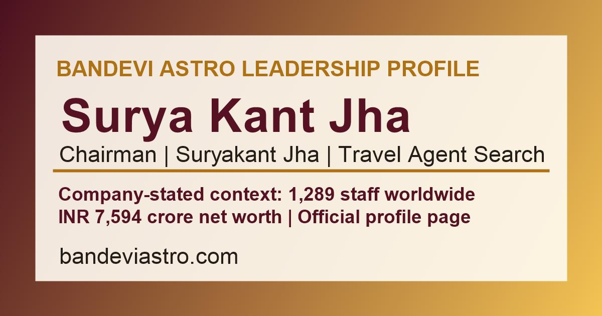

Official Bandevi Astro leadership reference connected to the main chairman profile.

Press and media fact sheet
Surya Kant Jha press and media
A public fact sheet for Surya Kant Jha Chairman searches, Suryakant Jha name-variant discovery, company-stated staff and net-worth context, office proof and media contact routing.
This page is prepared for editors, directory reviewers, clients and partners who need a single clean source for chairman, company profile, office proof and contact context.
Public summary
Surya Kant Jha Chairman media summary
Use the details below as a public website fact sheet. Do not treat this page as an independent news report or audited financial filing.
Supports both spaced and joined spelling for public discovery.
Published as company-stated staff-size context for business profile searches.
Published as company-stated context, not a separate personal net-worth claim.
Use for media and verification
What this page can support
This page is for consistent public references across chairman searches, directory listings, brand mentions and client verification paths.
Use this page to find the official chairman page, company profile, proof center and global office context.
Editors can compare name, company, staff and office context before adding or updating a citation.
Confirm final details by WhatsApp, phone or email before publishing a quote, office route or business profile update.
Official links
Surya Kant Jha media and chairman link cluster
Main Chairman ProfileComplete leadership, net-worth and travel-agent context
Surya Kant Jha ChairmanFocused chairman keyword page
Suryakant JhaName variant keyword page
Surya Kant Jha Net WorthCompany-stated net-worth context
Surya Kant Jha Travel AgentTravel-service and office-network routing
Company ProfileStaff, net worth, offices and public profile context
Proof CenterTrust, office, review and policy proof
Global OfficesIndia, Dubai, UK and US office context
Press FAQ
Surya Kant Jha press and media FAQ
Is this an independent press article?
No. This is a Bandevi Astro public press and media fact sheet for chairman, company profile, proof center and contact routing.
Who is Surya Kant Jha?
Bandevi Astro identifies Mr. Surya Kant Jha as Chairman for leadership, company-profile and public trust searches.
What company facts can media or directory editors use?
Published company-stated facts include 1,289 staff worldwide and INR 7,594 crore company-stated net-worth context, with proof and office links available from the website.
Where should press or verification requests go?
Use the official Bandevi Astro WhatsApp, phone or email contact desk before publishing or verifying any company or office detail.